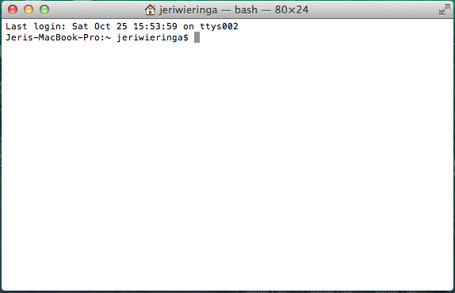

Installation
Welcome to DH Bridge. This one day workshop will introduce you to basic programming concepts for use in humanities research. We will be working with Python, a programming language that combines a human-readable syntax with robust support for statistical analysis and graphing. The data for the day will be gleaned from the Digital Public Library of America. We are excited that you will be joining us.
Step One: Required Supplies
For the workshop you will need to bring:
- Your Laptop:
- You need to have a working wifi connection (we will provide access to Mason's wireless)
- We recommend that you update your operating system to the latest version your machine can support. While you should be able to work through the tutorials on an older operating system, the odds of unexpected bugs and software incompatability increases with older operating systems.
- We recommend that you install the Chrome browser, as we will be using some Chrome extensions along the way.
- Your Powercord
You might also want to bring:
- An Extension Cord
- Snacks
Step Two: Overview
You will be installing or checking the status of the following tools:
- Python
- Pip
- Text Editor
A Note on Python Versions
For this workshop, we will be using Python 2.7. This is for two reasons: first, using the default Python version enables us to teach basic programming concepts without the additional complexity of managing Python versions; and second, most of the existing tutorials for learning Python, including The Programming Historian and Learn Python the Hard Way, still use 2.7. Starting with 2.7 will enable you to use these materials smoothly. We would like to also offer a Python3 version of this tutorial, so that those who wish to start with the newer syntax can do so.
Step Three: Install (Go To Your Operating System Below)
Mac
1. Install Text Editor
For this tutorial, we recommend using TextWrangler, which is a free editor from BareBones software. To get TextWrangler, go to http://www.barebones.com/products/textwrangler/ and download.
We recommend keeping TextWrangler in your Dock (Mac) or Quick Launch toolbar (Windows) so that it is easy to access.
You are welcome to use another text editor if you wish. Just make sure that it is a plain text editor (do not use Word).
2. Check your Python Version
Search your computer for "Terminal." This program allows you to give your computer commands without using the interface. Select to keep Terminal in your dock.
Open up Terminal. It should give you a screen that looks similar to this:

To check your Python version, type python into the terminal window and press "Enter". You should see something that looks like:
1 2 3 4 | Python 2.7.5 (default, Mar 9 2014, 22:15:05) [GCC 4.2.1 Compatible Apple LLVM 5.0 (clang-500.0.68)] on darwin Type "help", "copyright", "credits" or "license" for more information. >>> |
Make note of your Python version.
You are now in the Python Shell. This is an interactive environment that allows you to give Python commands directly inside Terminal. We will come back to this during the workshop.
Exit the shell by typing quit() and pressing "Enter".
3. Install Pip
One of the things that makes Python so powerful is the ability to use libraries, or packages of code, and to combine these together in our own programs. Pip is a tool that helps us install and use those packages of code.
To download Pip, we are going to use another tool called cURL, which is already part of your operating system. cURL allows us to transfer data using the command line.
Type curl -O https://bootstrap.pypa.io/get-pip.py and press "Enter". This will download a file titled "get-pip.py" onto your machine.
To install Pip, you need to run that file with Python. To do that, type python get-pip.py into Terminal and press "Enter".
If Terminal turns red and you get errors that say OSError: [Errno 13] Permission denied, don't fret. This is because the script is trying to make changes to system files, and your computer is protecting those files. Because we trust this script, we can over-ride those protections and give Python permission to install at the system level. We do this by using the sudo command (or "SuperUserDO") before the Python command.
Type sudo python get-pip.py into the Termainal window.
The computer will prompt you for your password. This is the password you use to log onto your computer. The terminal will give no indication that you are typing as you enter your password.
If everything goes well, you should see something similar to the following in your Terminal window:
1 2 3 4 5 | Downloading/unpacking pip from https://pypi.python.org/packages/py2.py3/p/pip/pip-1.5.6-py2.py3-none-any.whl#md5=4d4fb4b69df6731c7aeaadd6300bc1f2 Downloading pip-1.5.6-py2.py3-none-any.whl (1.0MB): 1.0MB downloaded Installing collected packages: pip Successfully installed pip Cleaning up... |
To check that everything installed, type pip into your Terminal and press "Enter". This will give you information on the different commands that available for you to use with "pip".
Well done! Your computer is now ready for the workshop!
Windows
1. Install Text Editor
For this tutorial, we recommend using NotePad++, which is a free editor. To get Notepad++, go to http://notepad-plus-plus.org/ and download.
To easily access NotePad++, be sure to add it to your Desktop and/or Quick Launch.
2. Install Python
Search your computer for "PowerShell." This program allows you to give your computer commands without using the interface.
Open up PowerShell. It should give you a screen that looks similar to this:
[Image of PowerShell]
In PowerShell, type python and press "Enter". You will most get back a message that says python is not recognized...
If this is the case, download and install python from https://www.python.org/download/. Choose the "Python 2.7.8 Windows Installer" or "Python 2.7.8 Windows X86-64 Installer", depending on your system. Run the installer and accept the default settings.
Once Python is installed, we have to tell the computer a bit about where to look for it. In PowerShell, enter:
1 | [Environment]::SetEnvironmentVariable("Path", "$env:Path;C:\Python27", "User")
|
Close PowerShell and re-open. To check if Python installed properly, type python and press "Enter". You should get something that looks like this back:
1 2 3 | Python 2.7.8 (default, Jun 30 2014, 14:24) [MSC v.1500 32 bit (Intel)] on win32 Type "help", "copyright", "credits" or license for more information. >>> |
You are now in the Python Shell. This is an interactive environment that allows you to give python commands directly inside PowerShell. We will come back to this during the workshop.
Exit the shell by typing quit() and pressing "Enter".
3. Install Pip
One of the things that makes Python so powerful is the ability to use libraries, or packages of code, and to combine these together in our own programs. Pip is a tool that helps us install and use those packages of code.
The easiest way to install Pip is through the use of a Python program called get-pip.py.
First, make a new directory "envs" at your root level:
1 | mkdir c:\envs |
"Cd" into that directory:
1 | cd c:\envs |
Use the following to download "get-pip.py":
1 | (new-object System.Net.WebClient).DownloadFile('https://raw.github.com/pypa/pip/master/contrib/get-pip.py', 'c:\envs\get-pip.py')
|
Finally, run the "get-pip.py" script:
1 | python c:\envs\get-pip.py |
Now typing pip should work. If it doesn’t it means the Scripts folder is not in your path. Run the next command in that case (Note that this command must be run only once or your PATH will get longer and longer). Make sure to replace c:\Python27\Scripts with the correct location of your Python installation:
1 | setx PATH "%PATH%;C:\Python27\Scripts" |
Close and reopen PowerShell after running this command.
To test, run pip in PowerShell.
Credits
These instructions are modifications of the Python installation instruction at Learn Python the Hard Way and Fred Gibb's tutorial on installing Pip as well as the InstallFest docs of RailsBridge.